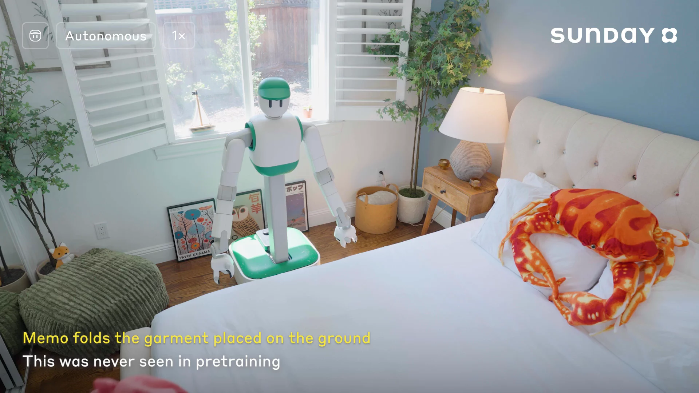
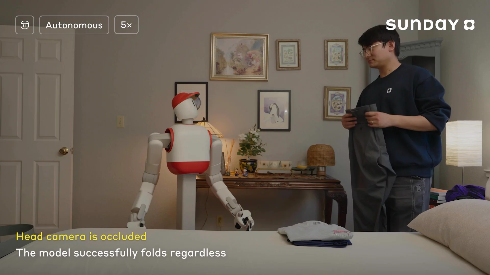

Technical Blog · Post-training · Reliability
ACT-2：强预训练如何把本地纠错变成跨家庭可靠性
ACT-2 的核心命题不是“折衣服做到 99.1%”，而是：当 base model 足够强时，在公司内部采到的一小段纠错数据不再只修好那间实验室，而能把同一种行为改进迁移到未见家庭、衣物与初始状态。
0. 一句话结论 #
ACT-2 用大规模、多样、传感化的人类数据预训练一个强 base model，再用少量 Memo 真机数据做 SFT 与失败驱动 post-training；随着预训练增强，in-domain 与 out-of-domain 成功率差从 82 个百分点降到 0，使内部迭代可以迁移到未见家庭，并在 785 次折衣评测中达到 99.1% 成功率，但模型和训练细节未公开，实验也缺少外部 baseline。
最重要的 insight 是：预训练规模的价值不只是抬高 zero-shot 性能，而是提高每一条 post-training 数据的“跨分布杠杆率”。强 base model 让局部纠错从记住一个场景，变成修改一个可迁移行为。
1. 论文定位：从 capability demo 转向 reliability claim #
ACT-1 展示了长程移动操作、未见家庭和灵巧手能力可以同时存在；ACT-2 追问的是这些能力能否在声明的范围内稳定成立。它把机器人能力拆成三个维度：
同样的 99% success，如果只针对一个固定物体、一个房间和大量现场 fine-tune，与覆盖未见家庭、9 类衣物且零现场适配，不是同一个结论。Solve 的贡献不是新 metric，而是要求任何成功率都同时携带适用边界与部署代价。
| 维度 | ACT-2 Laundry Solve |
|---|---|
| Performance | 99.1% success；成功折叠平均 4.72/5；中位耗时 2分13秒 |
| Scope | 9 类常见可折衣物、XXS 到 8XL、不同材质/颜色/厚度、未见房间和自然褶皱 |
| Adaptation cost | 每个家庭为 0；同一 checkpoint 与系统配置，无目标家庭数据或现场 post-training |
2. 方法总览：预训练负责可迁移性，后训练负责可靠性 #
diverse sensorized human data
-> Skill Capture / Skill Transform pipeline
-> large-scale ACT-2 base pre-training
-> lower validation loss + broader invariant features
curated in-house Memo demonstrations and failures
-> supervised post-training / SFT
-> change one behavior or repair one failure mode
-> improvement transfers to held-out homes and garments
fixed checkpoint
-> autonomous unseen-home evaluation
-> success + quality + speed + declared scope + adaptation cost文章只公开了 recipe，不公开 architecture。不能确认 ACT-2 是 VLA、diffusion policy、hierarchical policy 还是混合系统，也不能确认它是否使用语言、地图、显式 memory 或 world model。任何更具体的网络描述都属于猜测。
3. 四个关键创新点 #
3.1 用 generalization gap 衡量 post-training 是否真的可迁移
定义同一 post-training procedure 在已覆盖分布和 held-out 分布上的差：
$D$ 是预训练规模。0% 预训练时，in-domain 为 96%、out-of-domain 仅 14%，$G=82$；100% 时两者都为 100%，$G=0$。这比只报 in-domain 提升更重要：一个后训练 recipe 如果只提高实验室成功率，它并没有形成可部署的迭代飞轮。
3.2 数据质量提高了 scaling efficiency
相同数据量与算力下，high-quality subsampling 的 validation loss 更低，下游成功率明显高于 uniform sampling。12.5% 数据时为 75.6% vs 43.8%；50% 时为 92.3% vs 64.1%。因此“规模”实际是有效数据量：
这是机制抽象，不是官方公式。文章没有公开 high-quality 的选择器、分数或阈值，但结果说明数据混合质量与数量同样决定预训练效率。
3.3 One example 学到的是行为变化，不是完整新任务
Sunday 从同一个 base model 复制 4 份 checkpoint，每份只用 1 条 demonstration 做简单 SFT，分别教授一种新的折叠 technique；随后在 SFT 未见过的一件衣物上测试，4 个模型都执行了对应 technique。这个实验支持“单例可以改变可迁移行为”，但还不能推出任意新任务 one-shot：
- 任务仍在熟悉的 laundry domain 内，视觉与接触原语已被预训练覆盖。
- 只有 4 种 technique，每种只展示一个 held-out garment，统计样本极小。
- 没有弱预训练模型、更多 SFT 步数或数据增强对照。
3.4 Failure-driven post-training 形成可靠性 hill-climbing
部署反复暴露边缘失败，团队在内部 Memo 上采定向数据并 post-train；由于 generalization gap 已缩小，内部提升可作为未见家庭提升的代理。闭环可以写成：
deploy -> collect failure clusters -> curate corrective demos
-> SFT/post-train -> in-house regression suite
-> held-out reliability check -> deploy next checkpoint这套闭环的成立条件是 held-out performance 与内部 performance 持续相关。一旦新任务超出 base model 支持集，gap 会重新扩大，局部 hill-climb 仍可能过拟合。
4. 训练与推理流程：公开内容与缺口 #
| 阶段 | 可确认 | 【不确定】 |
|---|---|---|
| Pre-training | 高质量、多样、传感化 human dataset；比较 12.5/25/50/100% | 绝对小时数、模型规模、loss、action 表征 |
| Post-training | in-house Memo 数据；one-shot 实验使用 simple SFT | batch、LR、步数、冻结层、replay mix |
| Reliability loop | 按真实失败定向补数据，快速迭代 | 失败聚类、数据准入、回归门槛 |
| Inference | 同一固定 checkpoint，零家庭/衣物适配，自主重试与恢复计入耗时 | history、memory、安全 controller、最大重试次数 |
5. 公式与统计量怎么读 #
成功率
即 785 次中失败 7 次。文章报告约 $\pm0.3\%$ standard error，并提供区间 98.8–99.4%。接近 100% 时正态近似并不理想，官方在 scaling 图中说明使用 Wilson interval；完整评测最好统一报告 Wilson 或 exact binomial confidence interval。
质量与速度是 conditional metric
4.72/5 和 2分13秒都只在 778 个成功样本上计算。失败样本没有质量分，也不进入成功耗时分布。因此不能把“快且整齐”与 99.1% success 简单乘成一个单指标；部署报告应同时保留失败耗时、人工恢复成本和尾部延迟。
Validation loss 作为真机代理
文章报告 loss 与 success 的线性拟合 $R^2$ 分别约 0.98（high-quality）和 0.90（uniform）。但每条曲线只有少量 scale 点，且同一数据生成过程产生 loss 与成功率，相关性不等于普适因果。它适合在同一 pipeline 内筛数据配方，不应跨模型直接比较。
6. 训练-推理对齐检查 #
| 问题 | 处理 | 剩余风险 |
|---|---|---|
| 内部 post-train → 未见家庭 | 扩大预训练，实测 generalization gap 下降 | 只在 folding domain 验证 |
| 人类预训练 → Memo 执行 | 继承 ACT-1 的同构采集与 Skill Transform | ACT-2 中的 robot-data 比例未披露 |
| 成功 demonstration → 失败状态 | 真实部署失败驱动 post-training | 是否使用 on-policy data、DAgger 或负样本未知 |
| 单例 SFT → 行为泛化 | held-out garment 测试 | 测试规模太小，可能依赖已有 folding prior |
| 固定 checkpoint → 长尾扰动 | 未见房间、位置、光照、自然褶皱与人为干扰 | 环境数量与干扰协议未完整量化 |
7. 实验复盘：99.1% 很强，但要放回声明边界 #
7.1 预训练规模与 generalization gap
| 预训练规模 | In-domain SR | OOD SR | Gap |
|---|---|---|---|
| 0% | 96% | 14% | 82 pp |
| 12% | 100% | 90% | 10 pp |
| 25% | 100% | 92% | 8 pp |
| 50% | 100% | 96% | 4 pp |
| 100% | 100% | 100% | 0 pp |
每个成功率背后 50 次评估。趋势清晰，但 in-domain 很快饱和，gap 的下降主要由 OOD 上升驱动。数据规模以百分比而非绝对量报告，无法与 Xiaomi-Robotics-1、$\pi_0$ 或 GEN 系列比较数据效率。
7.2 数据质量对 scaling 的影响
| 规模 | High-quality SR / loss | Uniform SR / loss |
|---|---|---|
| 12.5% | 75.6% / 0.0700 | 43.8% / 0.0738 |
| 25% | 87.9% / 0.0682 | 53.6% / 0.0713 |
| 50% | 92.3% / 0.0668 | 64.1% / 0.0682 |
| 100% flagship | 99.1% / 0.0653 | 未给出同规模 uniform |
100% flagship 没有 matched uniform 对照，因此不能从表中单独估计全规模 quality filter 的边际收益；但在 12.5–50% 区间，高质量子采样优势一致。
7.3 Laundry Solve
785 次自主尝试覆盖 9 类衣物。短裤、厚/薄长袖、Polo 达 100%；T-shirt 99.0%；裤子 98.8%；leggings 96.3%；blouse 最低 94.7%，但 blouse 只有 19 次。按初始状态，床上衣堆 98.8%、床上篮子 100%、地面篮子 99.5%；不同机器人站位均高于 98.5%。


7.4 批判性判断
- 优点：785 次真机尝试远强于常见的 10–50 次实验；预先固定 scope、rubric 与 checkpoint；公开所有评测视频。
- 缺口：没有外部 baseline，也没有在同一 Solve 协议下比较 ACT-1、$\pi_0.5$ 或 imitation baseline。
- 评审偏差：由内部 annotator 两轮评分，虽有固定 rubric，但没有第三方或盲评报告。
- 范围限制：排除袜子、内衣、胸罩和配饰；Laundry Solve 不能外推到所有衣物处理。
- 系统归因：没有模型/硬件/恢复 controller 消融，99.1% 是整个 Memo 系统的成绩，不是可单独归因给 ACT-2 网络。
8. 可复现清单 #
- 公布预训练绝对规模、数据来源比例和 high-quality sampler。
- 公开 base model architecture、action interface、history、memory 和 map 输入。
- 给出 one-shot SFT 的 LR、步数、增强、replay mix 与 checkpoint selection。
- 说明 in-domain/OOD split 的家庭、衣物和初始状态数量。
- 公开 785 次 rollout manifest、随机化协议、重试与安全停止规则。
- 失败样本也报告耗时、失败阶段和人工恢复成本。
- 对同一 checkpoint 做第三方盲评与 inter-rater agreement。
- 加入 matched baseline 和 pretraining/post-training ablation。
9. 改进方向 #
| 改动 | 收益 | 风险 | 验证 |
|---|---|---|---|
| 用 capability coverage 建模数据质量 | 解释 high-quality sampler 为何有效 | 标签与 embedding 偏差 | 覆盖度、loss、OOD success 三者因果消融 |
| 主动选择最能缩小 gap 的失败样本 | 降低 post-training 数据成本 | 过度追逐当前评测分布 | 随机、uncertainty、gap-aware selection |
| 跨任务验证 one-shot transfer | 区分 behavior edit 与新任务学习 | 单例训练不稳定 | 折叠内、工具使用、导航三层难度 |
| Solve 加入 intervention budget | 更真实衡量家庭部署成本 | 记录与标准化复杂 | 每小时人工接管、复位和清理时间 |
| 长期 fleet drift 测试 | 验证可靠性是否随家庭变化保持 | 评测周期长 | 同一 checkpoint 跨周、跨季节、跨家庭回归 |
对 WAM / 数据闭环的启发 #
ACT-2 对 WAM 最直接的启发不是“预训练越大越好”，而是把后训练价值定义成跨分布增益：
筛 failure data 时，不应只选能修复训练房间的样本，而应优先选能学习到可迁移状态变化、恢复策略和接触模式的样本。数据 dashboard 也应同时显示 ID gain、OOD gain 和 gap，而不是只看训练 loss 或单场景成功率。
10. 速读备忘卡 #
- ACT-2 的核心是 generalizing reliability，不只是高成功率。
- 预训练规模从 0 到 100%，generalization gap 从 82 pp 降到 0。
- 强 base model 让内部 post-training 的收益迁移到未见家庭。
- High-quality 12.5% 数据达到 75.6%，uniform 仅 43.8%。
- One-shot 实验是四种 folding behavior edit，不等于任意新任务 one-shot。
- Laundry Solve 为 785 次尝试、778 次成功、99.1% success。
- 成功样本平均质量 4.72/5，中位耗时 2分13秒。
- 质量与速度都条件于成功，不能覆盖 7 个失败样本成本。
- Solve = performance + scope + adaptation cost。
- 没有外部 baseline、公开架构、代码、数据或训练配方。
- 99.1% 应归因于完整 Memo 系统，不应只归因于一个神经网络。